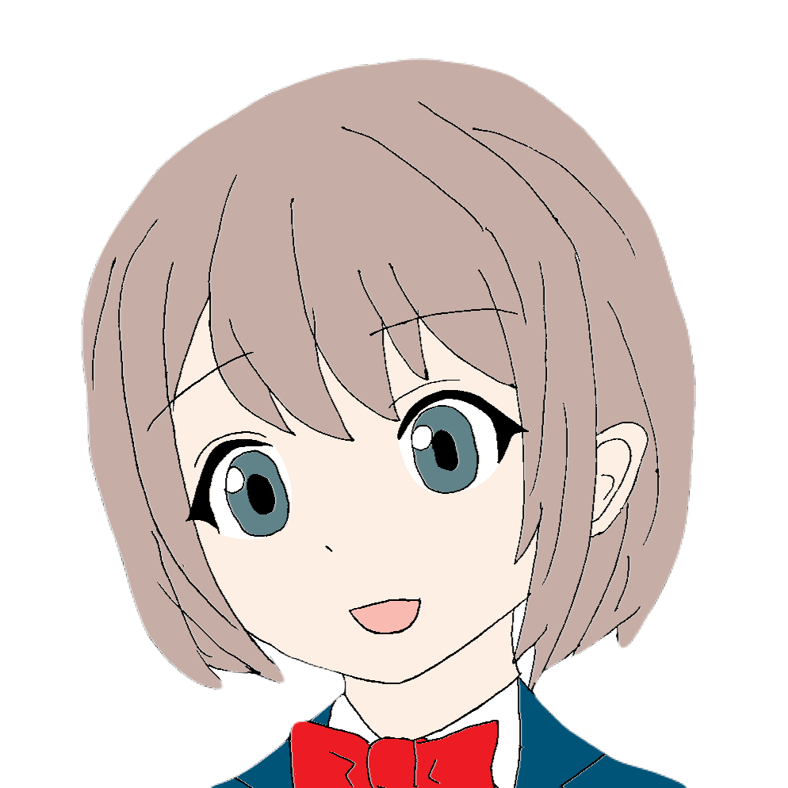

↑画像の大きさは適宜変更していただいて構いません↑
インターネットが家庭に普及し始めた1990年代から2010年頃、Htmlを駆使して個人サイトを作る文化がありました。
当時のサーバーでとくに有名なのは「Yahoo!ジオシティーズ」ですが、こちらはすでにサーヴィスを終了しており、
残念ながら2024年の今日においては、当時のサイトの多くが見られなくなってしまっています。
アクセスカウンターとキリ番ゲッター、ＢＢＳ（掲示板）、流れる文字、マウスカーソルを追いかける星屑、相互リンク、バナー、「直リンクお断り」等々。
今ではほとんど見られないような、多種多様な文化がありました。
私のサイトも、初めの頃はこのような時代のものをウェイバックマシンに残る当時のサイトを参考にしつつ、取り入れていました。
しかし、どうしても動作が重くなったり、ソースコードが複雑になったりと億劫になり、現在はアーカイヴの中に残しているのみです。
それでも、何か一つくらいは当時の文化を取り入れたいと思って思いついたのが「隠しページ」でした。
実はこのページ、トップページのアイコン画像（バナー風?）を押したときにのみアクセスできるような仕掛けになっているのです。
ほかのページで押そうとしても、リンクを貼っていないのでたどり着けません。
こうした、秘密を知っている人だけがアクセスできる「隠しページ」もまた、今ではすっかり忘れ去られた過去の遺物になっているといえるでしょう。

ここでは、アイコン画像の秘密についてお教えしましょう。
アイコンに使っているこの画像ですが、私が高校生の頃に作って、TwitterとかSNSのアイコンにしていたものです。
白紙にイラストを描きまして、輪郭をペンでなぞったのをスキャンしてBMP形式に保存し、
ペイントで色を付ける、という何ともアナログな方法で色々作りました。
そして、その中でも一番のお気に入りだったものを（比較的初期の頃から）ウェブサイトのロゴに使うようになりました。
少しずつ手を加えているので、完全なオリジナルというわけではありませんが、
このウェブサイトの比較的早い段階から、アイコン画像として使用しています。